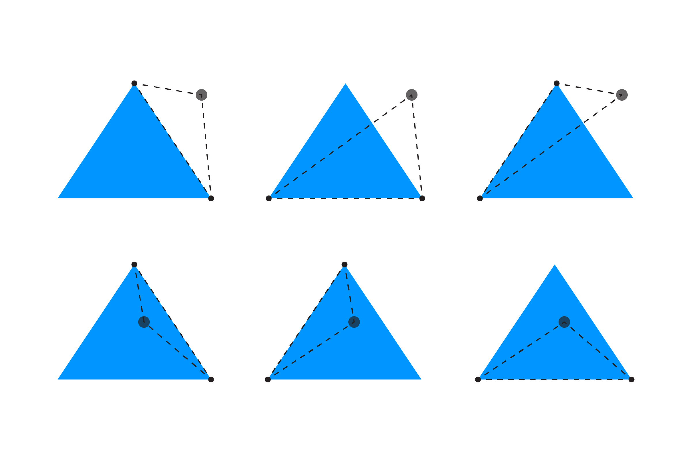

Звісно, трикутник — це окремий випадок багатокутника, тож для нього чудово працюватиме алгоритм із розділу «Багатокутник і Точка». Проте для трикутника існує ще один напрочуд красивий геометричний метод, який не потребує масивів і циклів та нагадує логіку з розділу «Лінія і Точка»!
Уявіть наш цільовий трикутник із вершинами (x1, y1), (x2, y2) та (x3, y3) і тестову точку (px, py). З’єднаймо тестову точку відрізками з усіма трьома вершинами трикутника. У результаті утворяться три нові трикутники:

У шкільній геометрії площу трикутника за довжинами його сторін шукають за формулою Герона. Проте в комп’ютерній графіці ми вже знаємо координати всіх трьох вершин, тому можемо обійтися без квадратних коренів і скористатися значно швидшою формулою площі через координати (вона походить із векторного добутку або формули площі Гаусса):
const areaOrig = abs((x2 - x1) * (y3 - y1) - (x3 - x1) * (y2 - y1));Математична деталь: уважний читач помітить, що класична формула площі трикутника ділить цей вираз навпіл, адже без ділення ми отримуємо подвоєну площу трикутника (площу паралелограма). Але оскільки нам потрібно лише порівняти суму трьох площ із четвертою (area1 + area2 + area3 === areaOrig), ділення обох частин рівняння на 2 нічого не змінює! Тож ми можемо сміливо заощадити чотири операції ділення.
Винесімо обчислення площі в окрему допоміжну функцію, щоб викликати її чотири рази — для вихідного трикутника та трьох дочірніх:
function getTriangleArea(x1, y1, x2, y2, x3, y3) {
return abs((x2 - x1) * (y3 - y1) - (x3 - x1) * (y2 - y1));
}Тепер знайдемо площі трьох трикутників, утворених між точкою (px, py) та кожною парою вершин:
const area1 = getTriangleArea(px, py, x1, y1, x2, y2);
const area2 = getTriangleArea(px, py, x2, y2, x3, y3);
const area3 = getTriangleArea(px, py, x3, y3, x1, y1);Якщо сума трьох площ дорівнює площі вихідного трикутника — точка лежить усередині!
if (area1 + area2 + area3 === areaOrig) {
return true;
}
return false;Повний код інтерактивного прикладу:
// координати рухомої точки
let px = 0;
let py = 0;
// координати трьох вершин трикутника
let x1, y1;
let x2, y2;
let x3, y3;
function setup() {
createCanvas(window.innerWidth, window.innerHeight);
noCursor();
strokeWeight(15); // збільшена товщина точки для кращої видимості
const centerX = round(width / 2);
x1 = centerX;
y1 = 100;
x2 = centerX + 150;
y2 = height - 100;
x3 = centerX - 150;
y3 = height - 100;
}
function draw() {
background(255);
// оновлюємо координати точки положенням курсора
px = round(mouseX);
py = round(mouseY);
// перевіряємо зіткнення трикутника і точки
const isColliding = collideTriPoint(x1, y1, x2, y2, x3, y3, px, py);
// змінюємо колір трикутника при зіткненні
if (isColliding) {
fill(255, 150, 0);
} else {
fill(0, 150, 255);
}
// малюємо трикутник
noStroke();
triangle(x1, y1, x2, y2, x3, y3);
// малюємо точку курсора
stroke(0, 150);
point(px, py);
}
// перевірка на зіткнення між трикутником та точкою
function collideTriPoint(x1, y1, x2, y2, x3, y3, px, py) {
// обчислюємо (подвоєну) площу вихідного трикутника
const areaOrig = getTriangleArea(x1, y1, x2, y2, x3, y3);
// обчислюємо площі трьох трикутників між точкою та кутами трикутника
const area1 = getTriangleArea(px, py, x1, y1, x2, y2);
const area2 = getTriangleArea(px, py, x2, y2, x3, y3);
const area3 = getTriangleArea(px, py, x3, y3, x1, y1);
// якщо сума трьох площ дорівнює вихідній площі — точка всередині!
if (area1 + area2 + area3 === areaOrig) {
return true;
}
return false;
}
// обчислення подвоєної площі трикутника за координатами вершин
function getTriangleArea(x1, y1, x2, y2, x3, y3) {
return abs((x2 - x1) * (y3 - y1) - (x3 - x1) * (y2 - y1));
}Підказка: якщо у вашій програмі координати вершин трикутника або точки є дробовими числами (наприклад, під час плавного руху чи обертання), через мікропохибку округлення замість суворої рівності === надійніше перевіряти різницю з малим допуском, як ми робили для лінії: abs((area1 + area2 + area3) - areaOrig) < 0.1.
Цей приклад створено за мотивами обговорення на форумі YoYo Games. Якщо ви бажаєте порівняти цей метод з іншими математичними способами перевірки трикутника, зазирніть у дискусію на GameDev.net.
Далі: Де інші приклади з трикутниками?